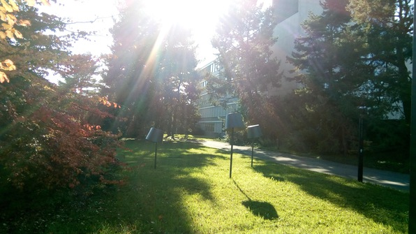
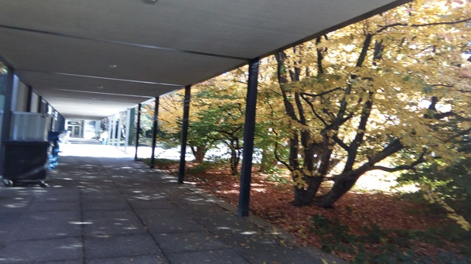
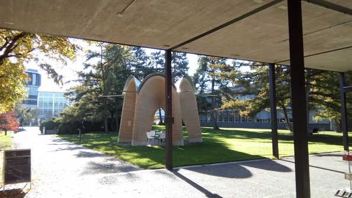
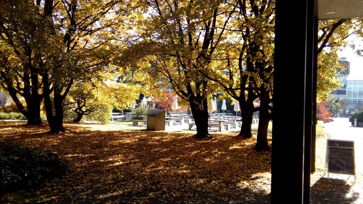
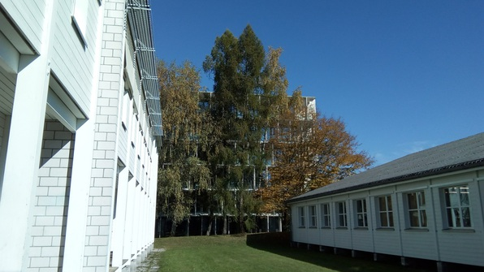
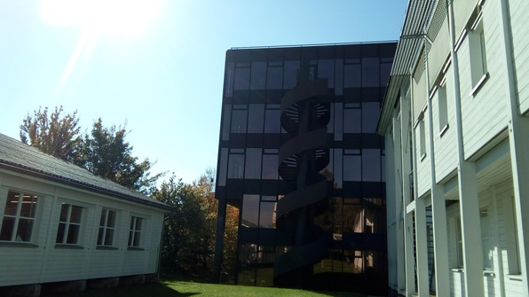
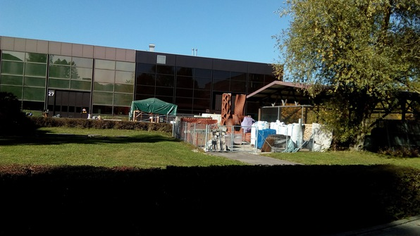

First half of today is a homework day! Meet Muriel in the morning for German practice, walk with her to buy a present for her mother. Then off to Höngg for quantum information.
After class, chat with the girl (Ramone) that I’d met early in the class and argued about convexity with. Invite her to lunch; she has a presentation today but we plan for next Wednesday :D She points me to a good lunch spot, which is expensive but tasty.
After lunch, I go hard on the Randomized Algorithms graded homework. Solve, walk to a new table, solve some more, get myself a banana, solve some more. The campus is SO FREAKING BEAUTIFUL!





 
At the end, I’ve solved 2/4 problems and tried to no avail to solve the 3rd.
Then I meet Mihaela, Jenny, and Michael for some volleyball! We first meet at an outdoor bouldering wall where Michael is climbing. I try my hand for a bit, it’s really fun! Jenny is actually a great climber. Then Mihaela shows up and we go to the volleyball courts. Jenny bails early to go to a board game night, and the remaining 3 play for a while. Michael also leaves for more climbing, but Mihaela and I keep at it. She’s going hard, diving into the sand at every opportunity, and we eventually make some really good rallies!
Then we go to find the board game night. As we arrive (after lots of searching) Jenny is just leaving, and warns of some serious weirdos in there playing Taboo. We decide to bail, especially as Mihaela has to make it to an international bar night, not to join, but to pay some ESN officers for a trip she wants to go on (her Paypal wasn’t logisticing correctly).
I go back to Culmann. I’d found out that because everyone was having so much trouble with the ML project, the instructors decided to give everyone in the class the solution! I was planning to drop the class because the project was so frustrating and I’m at way more than suggested credit load, but now I postponed the decision by going to the CAB and implementing their solution. Then, on some strange energy wave, I look at my HuskyJobs profile for applying to internships. Then I crash.